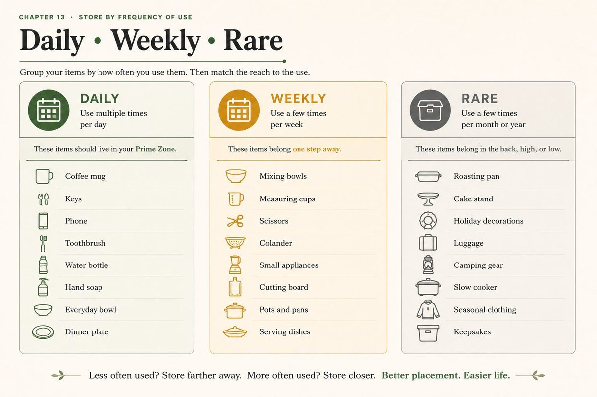

Attics, and what they can safely hold
How to organize an attic without overloading it
Before you organize an attic, find out what it can safely hold. Many attics are framed to carry the ceiling below, not a floor of boxes, and most get hot enough in summer to ruin a lot of what people store there. So keep only light, heat-tolerant things up there, on the part that is already floored, in sealed and labeled bins, and keep the heavy and the precious downstairs.
The short answer. Check what you are standing on first: no boxes on insulation or between joists, and never cut or load a roof truss. Store light things only, nearest the hatch for what comes down every year, farther back for long-term keeps. Keep the hatch, walkway, eaves, flues and wiring clear, use sealed plastic rather than cardboard, and date every bin so the seasonal trip doubles as the review.
The first question is structural, not organizational
An attic floor is often not a floor. In many houses the framing up there was sized to hold the ceiling below it, plus the insulation, and nothing more. Boxes add weight it may not have been designed for. So before you plan anything, look at what you are standing on.
- Is there flooring? If the attic has a plywood or board floor, at least part of it was meant to be walked on. If you see only joists with insulation between them, do not set boxes on the insulation or on the ceiling material between the joists. It cannot carry them, and a foot through the ceiling below is the usual way people find this out.
- Joists or trusses? If you see diagonal boards forming W or V shapes between the roof and the attic floor, those are trusses. Every piece of a truss is doing structural work. Never cut, notch, remove or hang weight from any part of one to make room for storage.
- How much can it hold? There is no general answer, and anyone who gives you one without seeing your attic is guessing. It depends on how the house was framed. If you want to add flooring or store anything heavy, that is a question for a contractor or structural engineer, not an organizing decision.
The practical rule that follows: store only light things in an attic, keep them on the part that is already floored, and keep the heavy things downstairs.

What not to store in an attic
Most attics get much hotter than the house in summer and colder in winter, and the swing is the problem. Heat ruins things that look perfectly fine when they go up. Keep these out:
- Anything that melts or warps: candles, crayons, vinyl records, some plastics.
- Photographs, negatives, film and important papers. Heat and humidity swings damage them, and many are irreplaceable. They belong in a closet in the living space.
- Electronics and batteries.
- Paint, aerosols, adhesives, cleaning chemicals and anything flammable.
- Food, including pet food, which also brings pests.
- Anything you would be upset to find ruined, which is a good test on its own.
What attics suit: holiday decorations that are not fragile or made of wax, empty luggage, light seasonal items, and keepsakes that tolerate heat, in sealed bins.
The five zones of an attic
An attic is small enough that it can feel like one job, but it has distinct jobs inside it, and they fail separately. Work them in this order.
1. The hatch and the ladder
Getting in and out is the riskiest part of using an attic. Keep the area around the hatch clear on both sides, so nothing sits where you need to put your hands or feet. Fold-down attic ladders carry a weight rating on their label; read it, and remember it counts you plus whatever you are carrying. Better still, do not carry boxes up a ladder at all: one person hands up from below, the other takes it from above. Put a light within reach of the hatch, so you are never climbing into the dark.
2. The walkway
A clear, floored path from the hatch to where things are stored. Nothing is ever stored on the walkway, even for a day, because that is how a path becomes a pile you have to step around on a beam. If the edge of the floored area is not obvious, mark it, so nobody steps off it reaching for a bin.
3. Seasonal, nearest the hatch
The things that come down every year go closest to the hatch, grouped by the month they come down, so one trip collects a whole season. If you have to crawl past the summer things to reach December, the order is wrong.
4. Long-term keep, farther back
Things you are genuinely keeping but rarely need go farther in. Every bin gets a label you can read from the walkway and the month and year it was last opened, the same standard used for garage overhead storage. A bin nobody has opened in years is not storage, it is a postponed decision; here is how long to keep a maybe.
5. The keep-clear areas
Some parts of an attic must stay empty, even when they look like free space:
- The eaves, where the roof meets the floor. Many attics are ventilated through openings there, and pushing bins into the eaves can block the airflow the roof depends on.
- Around a chimney or any flue pipe.
- Around recessed light fixtures poking up from the ceiling below, and around any heating or cooling equipment and ductwork.
- Over wiring. Do not stack things on cables or move them to make room.
- On top of the insulation. Compressed insulation insulates less, so a bin sitting on it quietly works against the heating bill.
Sealed bins, and why cardboard fails up here
Cardboard absorbs moisture, weakens in heat, and is easy for insects and rodents to get into. Lidded plastic bins solve all three. While you are up there, the Shine step is really an inspection: look for droppings, chewed material, daylight where there should not be any, and brown stains on the underside of the roof that mean water is getting in. Those are things to fix, or to call someone about, before anything else goes up.
Clothes in the attic
Generally not the best place, because of the heat and the humidity swings. If it is the only space you have, store clothes clean and completely dry, in sealed plastic bins rather than cardboard or bags, and check them when the season changes. Anything valuable or sentimental, a wedding dress, a family quilt, belongs in a closet in the house instead.
A small attic
A small attic forces the useful decision early: it can only hold one or two kinds of thing well. Pick the job, usually seasonal decorations, give it the floored area nearest the hatch, and send everything else to a zone downstairs or out of the house. The guide to zones that are too small for what they hold covers how to tell a capacity problem from a sorting one.
Keeping it that way
- The standard. Light things only, on the floored area only, in sealed and dated bins, walkway and eaves clear, hatch clear on both sides.
- The trigger. The seasonal trip itself. When a bin comes down, the new date goes on it before it goes back up, and anything you passed over two seasons running comes down for a decision.
Common questions
Is it safe to store things in the attic?
It can be, within limits. Store only light items, only on the part of the attic that is floored, and choose what goes up with the heat in mind. Do not set anything on insulation or on the ceiling between joists, never cut or hang weight from roof trusses, and keep eaves, flues, light fixtures and wiring clear. If you want to store anything heavy or add flooring, ask a contractor or structural engineer first.
What should not be stored in an attic?
Anything heat or humidity can damage: candles, crayons, vinyl records, photographs, film, important documents, electronics and batteries. Also paint, aerosols, adhesives and anything flammable, food and pet food, and anything valuable or irreplaceable. Attics suit light, heat-tolerant things such as non-fragile holiday decorations, empty luggage and seasonal items in sealed bins.
Can I put boxes on attic insulation?
No. Insulation and the ceiling material beneath it are not built to carry weight, and compressing insulation reduces how well it insulates. Store things only on a floored area. If you need more floored space, ask a contractor; raised storage platforms exist that sit above the insulation, but the framing still has to carry the load.
How do you store things in an attic with trusses?
Work around the trusses, never through them. Every part of a truss carries load, so do not cut, notch or remove any piece, and do not hang storage from the diagonal members. Use only the floored area between and around them, keep bins light and low, and leave the walkway clear. Adding flooring or capacity in a trussed attic is a question for a professional.
Can you store clothes in the attic?
It is not ideal because of heat and humidity swings, but it can work for ordinary seasonal clothes. Wash and fully dry them first, store them in sealed plastic bins rather than cardboard or bags, and check them each season. Keep valuable or sentimental fabric, such as a wedding dress, in a closet in the living space instead.
How do I organize a small attic?
Give it one job, usually seasonal decorations, and store only that. Keep the floored area nearest the hatch for the things that come down every year, label and date every bin, and move everything else to a zone downstairs or out of the house. A small attic that tries to hold everything ends up holding nothing you can reach.
How much weight can an attic hold?
There is no general answer. It depends entirely on how your house was framed, and many attic floors were designed to carry the ceiling below rather than stored goods. A contractor or structural engineer can tell you what yours can safely hold. Until then, store only light items on the floored area.
Keep reading
- How to organize a basement, one zone at a time, the other overflow room, where the risk is water rather than heat and weight
- Garage bulk and overhead storage, the same labeled-and-dated standard, for the rack above the car
- How long should you keep something you can't decide about?, for the bins that went up undecided
- How to declutter sentimental items without the guilt, because most of what lives in an attic is kept for a feeling
- All 20 rooms and 114 micro zones, each with its own root-cause diagnosis and standard
For storage you rarely see
One standard for every place a house stores things
There is no attic chapter in the Whole House Print Pack, and we will not pretend there is. The labeled-and-dated standard above comes from its storage zones, and the pack carries the six passes and the standard for all 114 zones on cards you print at home, 19 dollars. Or talk it through on a one hour virtual consult, 250 dollars.
The Print Pack, 19 dollarsOr work a zone, freeTalk it through, 250 dollars